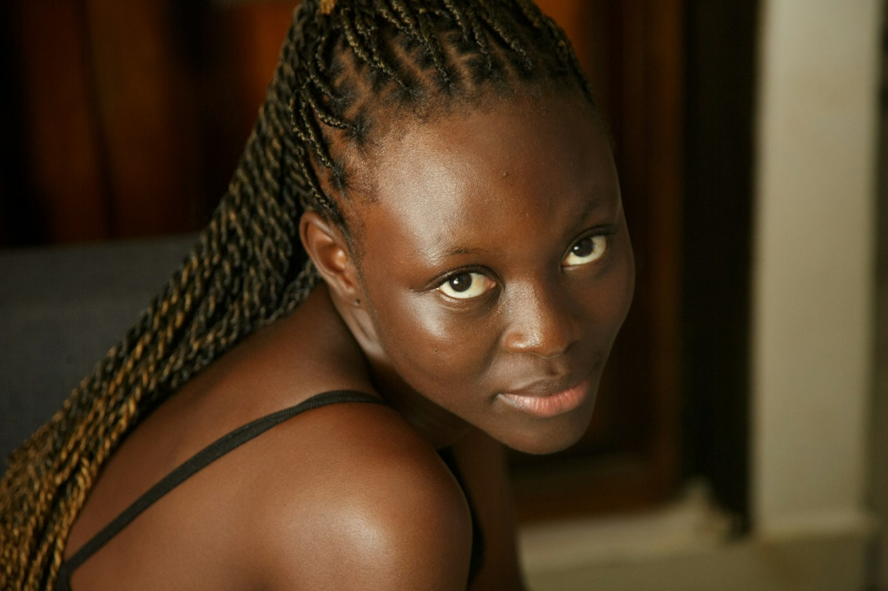
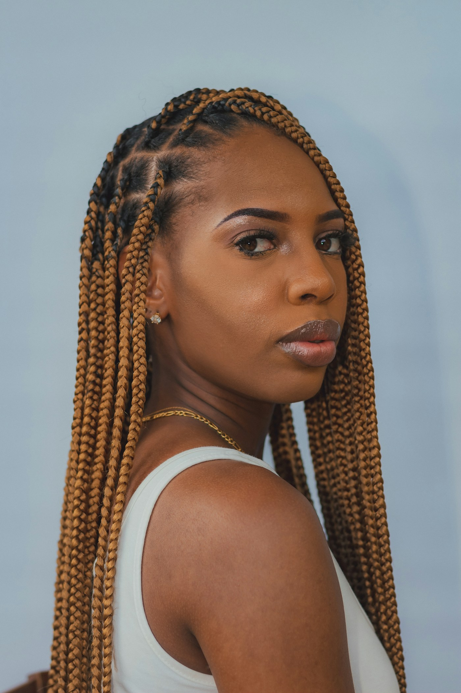
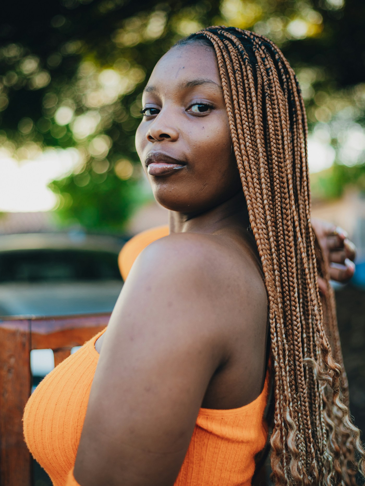
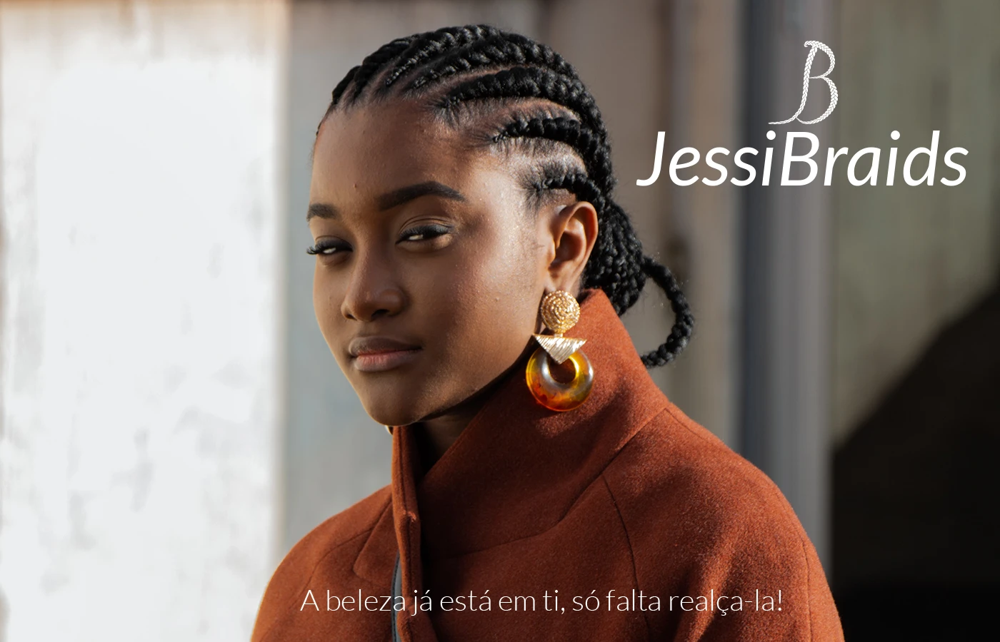
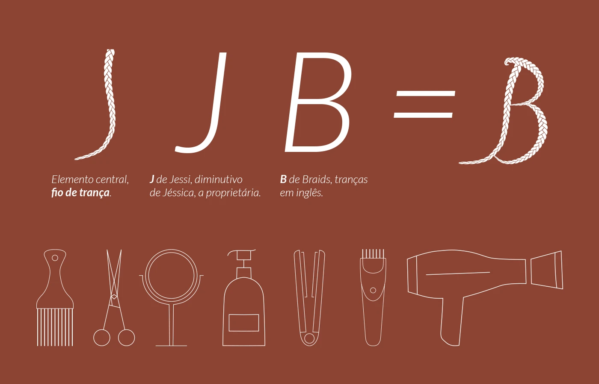
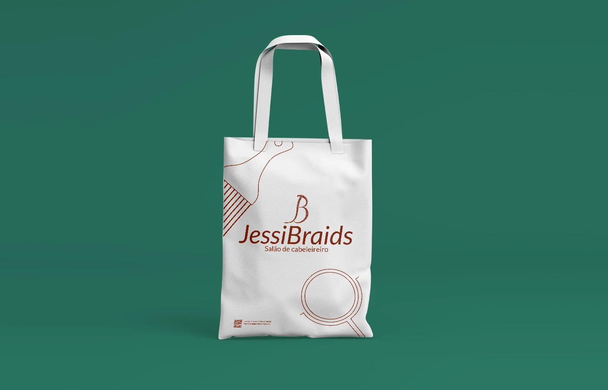
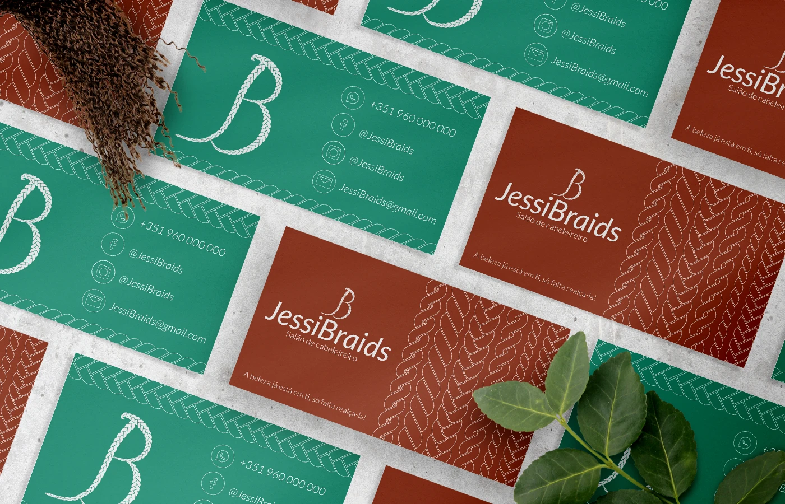

01Tranças
↗Comprimento, desenho e personalidade. Um universo de possibilidades para explorar.
BOX BRAIDS · KNOTLESS · CORNROWSTRANÇAS COM IDENTIDADE
O teu cabelo conta a tua história. Damos-lhe forma, com tranças, cuidado e espaço para seres tu.
Para cada textura.
Para cada versão de ti.

BELEZA QUE SE ENTRELAÇA.01 / O TEU PRÓXIMO LOOK
Do look de todos os dias a uma mudança que apetece há muito. Vamos descobrir o penteado que combina contigo.

01Comprimento, desenho e personalidade. Um universo de possibilidades para explorar.
BOX BRAIDS · KNOTLESS · CORNROWSSoltos ou apanhados, discretos ou cheios de expressão. O teu momento, o teu estilo.
DIA A DIA · OCASIÕES ESPECIAIS
03A atenção que o teu cabelo merece, antes, durante e depois do penteado.
CABELOS AFRO & EUROPEUSSeleção de serviços ilustrativa. Estilos, duração e valores a confirmar com o salão.

UM ESPAÇO PARA SERES TU.02 / A NOSSA ESSÊNCIA
Na JessiBraids, acreditamos que a beleza começa naquilo que te torna única. Somos um salão de cabeleireiro especializado em diversos tipos de penteados, com um carinho especial pelas tranças.
Recebemos cabelos afro e europeus e valorizamos a personalidade de cada pessoa. A ideia é simples: ouvir-te, conhecer o teu estilo e dar forma ao look que imaginas.
03 / GUARDA ESTA INSPIRAÇÃO
Texturas, desenhos e tons que dão vontade de experimentar.
Fotografias de referência. Não representam trabalhos realizados pelo salão.
ENTRELAÇADOS DESDE O PRIMEIRO TRAÇO
Um fio de trança, o J de Jessi e o B de Braids. A nossa identidade nasce desse encontro: simples, próxima e cheia de personalidade.



04 / O PRÓXIMO PASSO É TEU
Conta-nos o que tens em mente. Podes trazer uma referência ou deixar a inspiração connosco.
PASSA POR CÁ
Rua das Tranças, n.º 12
Amadora, Portugal
+351 935 136 629
ola@jessibraids.example
Terça a sábado · 09:00–19:00
Domingo e segunda · Encerrado